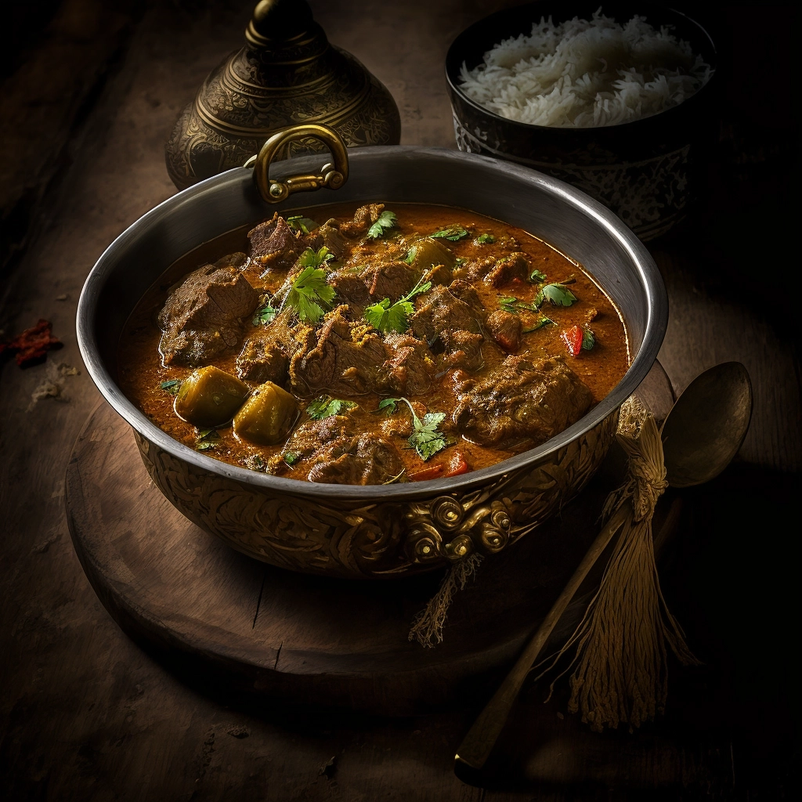

Lamb Curry

A delicious coriander and mint lamb curry, inspired by good old Yazo
Basically, mumzy used to make this ting back in the day in 42 Colebrooke Drive. Banged. Still bangs. Be careful not to eat too much red meat though, can result in high cholesterol which is obviously bad for your heart.
If you can get this down, god dayum, you gonna love it baby
Ingredients
- 500 g Lamb
- 50 ml Olive Oil
- 2 Onions
- 3 Tomatoes
- 1 tsp Salt
- 1 tsp Ginger Paste
- 1 tsp Garlic Paste
- Chilli Powder
- Coriander
Steps
- Grab that lamb
- Massage dem tings into it
- Chuck it in a pan
- Stir it up
- Ask yo MAMMA what to do next.
- Done Diddly!